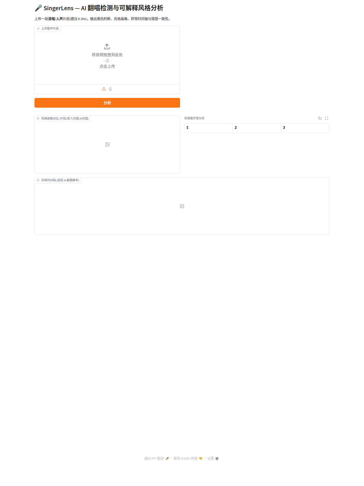

一次对歌声深度伪造检测(SVDD)评测的侦查 · 每个发现都是对上一个疑问的回应
在公开基准上,检测器号称 AUC ≈ 0.99,任务似乎已被解决。可一旦换个数据集去用,成绩断崖式坍塌到接近抛硬币。这说明那 0.99 衡量的不是"能不能识别 AI",而是别的东西。
疑问1:是声码器指纹吗?→ copy-synthesis 把真唱也过声码器,不会被判假,排除。疑问2:是某类生成方式?→ 留一声码器/留一范式,退化 2–3 倍。重大发现:把"范式 × 声码器"做因子化对照——固定声码器、只换生成范式,EER 从约 1% 飙到约 50%,比换声码器还狠。混杂有两个相互独立的轴。
| 对照 | 固定 | 域内 EER▾ | 留出 EER▾ | 退化▾ |
|---|
真凶是音频的制作签名(频谱带宽/编解码)。拖动下面的滑块,把一段真人演唱的带宽逐步压窄——看检测器从什么时候开始把真人误判成 AI。
用粤语(声调)和英文(非声调、Taylor Swift)真唱重跑,翻转率和普通话几乎一样——英文带限翻转率 50%,甚至略高于普通话。混杂与语言无关。
无监督域适应、消除带宽、重标定、甚至换一条语义线索(情感一致性)——全部停在随机带。唯一管用的是:在目标域标少量数据从头训练。10 个标签就开始 work。
把"随机选 k 个去标注"换成"专挑模型最犹豫的样本"(固定 30% 测试集,消除测试集变简单的假象)。达 0.90 省 ~25% 标签(150 vs 200)——多 seed 检验下该优势在中高预算(k≥100)稳健(配对胜率达 0.92),小预算(k≤50)与随机相当。免标签的纯多样性选样(k-center)反而更差——机制上 uncertainty 确实在挑决策边界附近的样本(边界邻近度 0.15 vs 随机 0.19)。增益中等但一致(同预算 ~+0.02~0.03 AUC),仍是 per-target 监督。
对少样本检测器做特征归因:仅 50 个标签,HNR(真实真伪线索)权重就从源域 0.055 跳到 0.123,走完到域内目标(0.146)约 80% 的路。它恢复的是目标域真实判别轴,不是新捷径——但仍是每目标监督(换新平台需各标各的)。
整场侦查建立在我们自建的 SingerLens 上——它既是数据生产线,也是一个可现场演示的可解释检测系统。

打开实时 Demo →ssh -L 7860:localhost:7860 3090-shahe 后开 http://localhost:7860| 成员 | 负责模块 |
|---|---|
| _______ | 数据采集与处理(B站下载 / Demucs / Seed-VC 生成) |
| _______ | 审计协议与跨数据集实验(LOVO / LOGO / 因子化 / cross-dataset) |
| _______ | 归因与因果实验(attribution / 扰动 / 带宽扫描 / 三语种) |
| _______ | 修复实验与 MSA(DA / confound-removal / few-shot / attribution) |
| _______ | 系统与前端(Gradio / 情感服务 / 本可视化页面)+ 报告 |